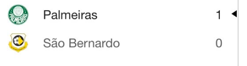

TEMPORADA 2023 - ENCERRADA
CAMPEONATO PAULISTA
No Estadual mais disputado e concorrido do Brasil, o Tigre acabou igualando a sua melhor campanha na história no torneio e se classificou em segundo do grupo, indo as quartas de final para enfrentar o Palmeiras (que foi o primeiro de seu mesmo grupo), onde infelizmente acabou eliminado por 1x0 na casa do adversário
Com 15 jogos disputados e 9 vitórias, 3 empates e 3 derrotas, o São Bernardo surpreendeu a todos em todos os sentidos, dos termos estatísticos sendo o terceiro melhor ataque da competição (22 gols marcados), o penúltimo em gols sofridos (10 gols sofridos) até mesmo a maneira ousada que a equipe se postava em campo e o futebol vistoso e organizado.
No sentido de partidas memoráveis na competição seja por tamanho delas, desempenho ou resultados, ficaram marcadas as partidas contra a Inter de Limeira na estreia da competição, 3x0 fora de casa, o 1x1 contra o Santos no Primeiro de Maio, o 2x0 no Corinthians no Primeiro de Maio, o 5x1 no Guarani fora de casa e o 1x0 contra o São Paulo em pleno Morumbi lotado.

TAÇA INDEPENDÊNCIA:
Juntamente a Copa do Brasil, foi a competição mais curta do Tigre no ano mas essa se encerrando com um final feliz. Com apenas 2 jogos disputados (semifinal e final) muito pela participação muito feliz e bem desenvolvida no Campeonato Paulista, o que trouxe o clube a ser classificado já diretamente a essas fases finais, a equipe bateu primeiramente a Inter de Limeira, em casa, por 1x0 com gol marcado pelo atacante Léo Jabá.
Em sequência, enfrentou o Mirassol, em casa também, já pela final da competição. Em jogo muito disputado, a partida acabou terminando em 0x0 e indo para os pênaltis, onde o adversário desperdiçou 2 cobranças, enquanto o São Bernardo apenas 1, e que acabou consagrando a equipe como campeã da Taça Independência pela primeira vez na história do clube, em sua primeira participação também, e o que seria o quinto título oficial na história do clube nessa crescente das últimas temporadas.
CAMPEONATO BRASILEIRO SÉRIE C:
JNa competição nacional mais memorável da história do clube, pois era a primeira vez que o São Bernardo disputava a Série C do Brasileiro, o clube fez boa campanha e ficou a um passo de em seu primeiro ano, subir a Série B.
Foram 25 jogos disputados, com 9 vitórias, 9 empates e 7 derrotas, tendo iniciado a competição de forma fulminante seja dentro ou fora de casa, tendo 6 jogos e 5 vitórias, sendo também a oitava equipe em mais gols marcados (26 gols) e a décima primeira com mais gols sofridos (23 gols), em uma competição onde inicialmente tinham 20 equipes.
Classificada em oitavo na fase classificatória/inicial, após algumas irregularidades depois do bom ínicio como estreante no torneio, a equipe conseguiu também a classificação após eliminar o Náutico (adversário direto pela classificação) em plena casa do adversário, com um simples empate em 2x2 que favorecia o Tigre. Na fase final onde se definiria os acessos, o São Bernardo caiu em um dos grupos onde continham: Operário-PR, Brusque-SC e São José-RS. Com 6 jogos disputados e 2 vitórias, 1 empate e 3 derrotas, a equipe tinha o acesso com resultados favoráveis a si na última rodada, vencendo ou até empatando contra o Operário (adversário direto) na casa deles, a equipe subiria, porém nos minutos finais a equipe sofreu o único gol da partida, que se encerrou em 1x0 para o Operário, e acabou eliminada do torneio e sem o seu acesso, assim, permanecendo na Série C para 2024 e encerrando sua participação em torneios nesse ano.
COPA DO BRASIL:
Na competição que envolve milhões e inclui equipes de todo Brasil, a equipe do Tigre infelizmente acabou eliminada no primeiro jogo da competição diante do Náutico, em jogo único no estádio Primeiro de Maio, tendo perdido a partida por 1x0.
O São Bernardo se encontrou melhor na partida até por ter de buscar o resultado cedo, após sofrer um gol aos 4 minutos de jogo, ainda na primeira etapa. A equipe sufocou a equipe adversária tendo mais posse, finalizações e controle de jogo, contando com boas defesas do goleiro adversário também, porém não conseguiu furar todo o bloqueio que tinha contra e acabou deixando a competição num Primeiro de Maio com um bom público, porém, com 750 mil já no bolso só pela entrada na competição.